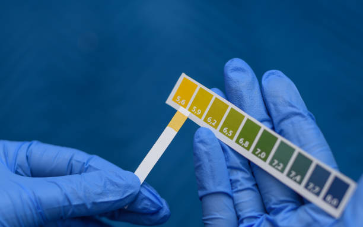
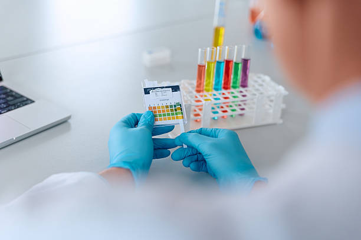
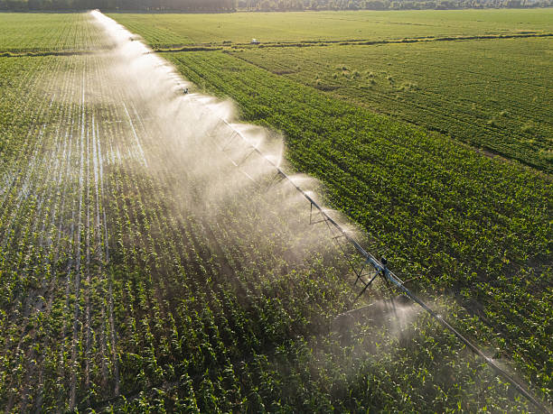

What is pH?
pH is a determined value based on a defined scale, similar to temperature,the more acidic the water is. The higher the number, the more basic it is. A pH of 7 is considered neutral,Most garden plants like soil that's slightly acidic to neutral, in the range of 6.0 to 7.0.

Measuring pH Using an Indicator
Measuring pH Using an Indicator involves comparing the standard color corresponding to a known pH with the color of an indicator immersed in the test liquid using the solution that you will use for growing.

Overwatering
Overwatering is one of the more common causes of plant problems. Roots growing in waterlogged soil may die because they cannot absorb the oxygen needed to function normally. The longer the air is cut off, the greater the root damage. The dying roots decay and cannot supply the plants with nutrients and water.
Climate
Climate is the most important dominating factor influencing the suitability of a crop to a particular region. The yield potential of the crop mainly depends on climate. More than 50 percent of variation of crops is determined by climate. The most important climatic factors that influence growth, development and yield of crops are solar radiation, temperature and rainfall.